Introdução
O LuaEclipse é uma coleção de plug-ins para a plataforma Eclipse. Esta ferramenta se propõe a facilitar o desenvolvimento de aplicações que utilizem a linguagem Lua - quer seja usada como linguagem principal, de modo standalone, quer seja utilizada como linguagem de extensão.
Os plug-ins são extensíveis e podem ser utilizados como base para outras ferramentas. Esta seção, entretanto, resume-se em um manual de utilização do software e não de extensão do mesmo.
LuaEclipse é um software livre e usa a mesma licença do Lua 5.1.
Instalação
O processo de instalação do plug-in é muito simples, mas necessita de alguns pré-requisitos. O primeiro deles é que o usuário já deve ter instalada a versão 3.2 ou superior da plataforma Eclipse. O Eclipse pode ser baixado no endereço www.eclipse.org. A instalação do Eclipse, por sua vez, exigirá uma instalação prévia do Java SDK.
É possível install o LuaEclipse com a instalação mínima do Eclipse (Eclipse Platform Binaries), mas é recomendável usar uma distribuição mais completa, como o C/C++ Development Tooling (CDT).
Existem duas formas de instalar o LuaEclipse.
- Eclipse Software Updates
- Na barra de menu superior, na opção Help->Software Updates->Find And Install, \ marque a opção "Search for new features to install" e clique em "Next".
- Clique em "Add Remote Site", no campo URL insira http://luaeclipse.luaforge.net/update-site/site.xml.
- Marque somente LuaEclipse e clique em "Finish". Em seguida siga os passos da instalação 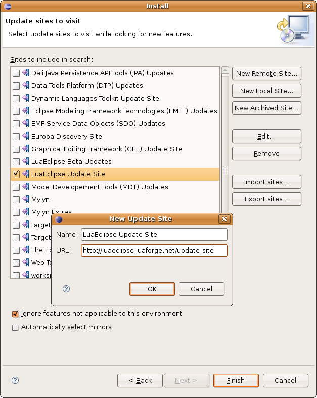
- Na próxima tela, seleciona as features para instalar.
Se deseja utilizar a nova integração com o LuaProfiler, selecione a
feature apropriada.
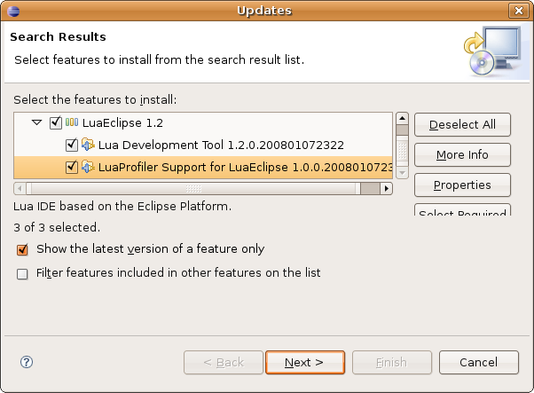
- Faça o download da última versão do
LuaEclipse no site LuaForge. Para
instalar no Eclipse, basta descompactar o arquivo zip na pasta raiz da
instalação do eclipse, por exemplo: "/usr/local/eclipse".
Feito isto, inicialize\reinicialize o Eclipse e a
instalação está concluída.
Para verificar se a instalação foi concluída com sucesso, vá até a opção de menu Help->About Eclipse SDK e selecione a opção Plug-ins Details e verifique se o LuaEclipse esta instalado corretamente. Veja a figura abaixo:
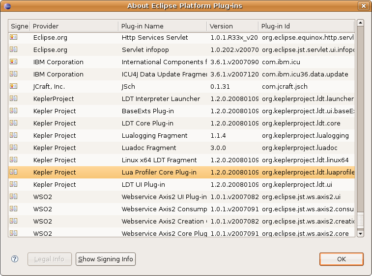
Primeiro Projeto Lua
Para criar um novo projeto Lua, clique no menu na opção File->New->New Lua Project.
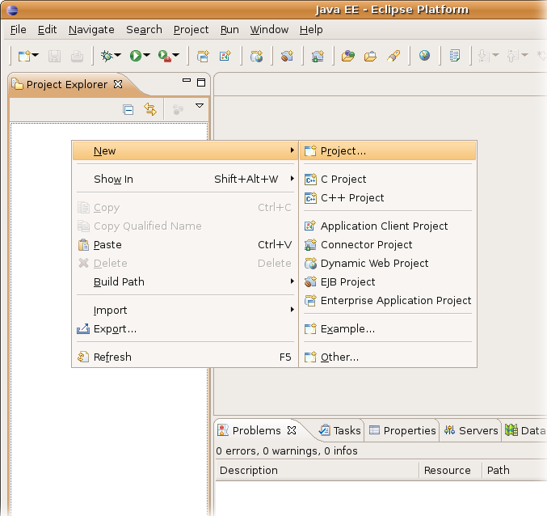

Para incluir um novo script Lua. Selecione o projeto Lua desejado, em seguida clique com o botão direito e selecione a opção Lua Actions->New Lua File
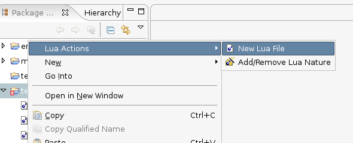
Agora é só começar a codificar. ;)
Preferências e interpretadores
Scripts em linguagem Lua precisam de um interpretador ou de um
programa hospedeiro que possa executá-los.
No momento, a única opção disponível em
preferências é a configuração de
interpretadores Lua para a execução de scripts. Para fazer
tal configuração, selecione a opção de menu
Window->preferences... e em seguida selecione a categoria Lua->
Installed Interpreters, como na figura abaixo.
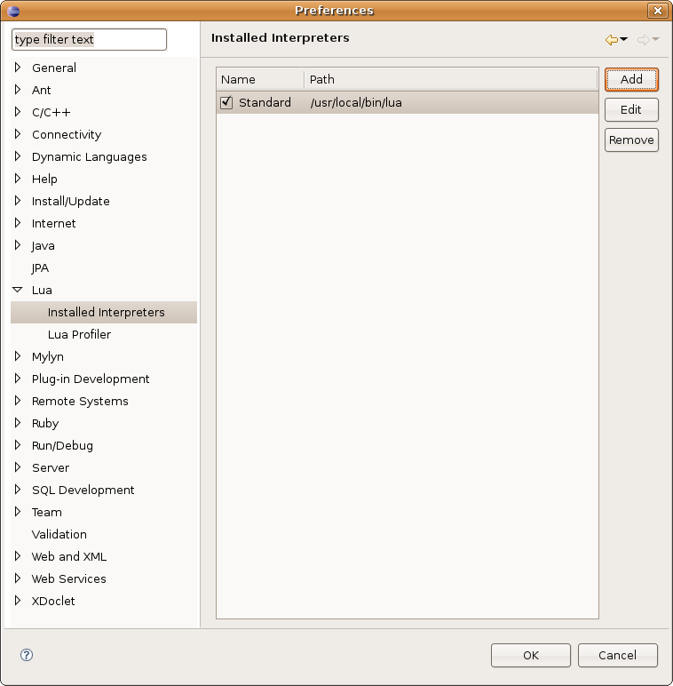
Nesta janela, é possível adicionar um novo interpretador clicando na opção "Add"; é possível modificar os dados sobre um interpretador selecionado na opção "Edit" e remove-lo na opção "Remove". A configuração de um interpretador é basicamente um nome que o identifica e o caminho para o arquivo executável do mesmo. Na primeira coluna da lista de interpretadores, existe a opção de marcar um deles como sendo o interpretador padrão para execução dos scripts, esta opção é utilizada na tela de configuração de nova execução que veremos mais adiante. Feitas as configurações necessárias, clique no botão "OK" e toda configuração será armazenada.
Você deve configurar o binário do aplicativo hospedeiro como um interpretador caso seu projeto utilize Lua como linguagem de extensão, ou não será capaz de executá-lo adequadamente.
Executando um arquivo Lua
O LuaEclipse usa os Launchers da plataforma Eclipse para
executar os scripts Lua.
Existem duas maneiras de executar um script lua: você pode criar uma
configuração de execução para seu script ou pode usar o menu de contexto
do Eclipse diretamente no arquivo, selecionando Run As -> Lua
application.
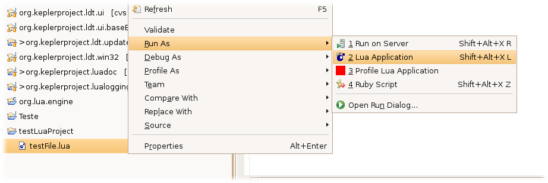
Para criar uma configuração de execução, selecione a opção
de menu Run->Run...
Crie uma nova configuração do tipo "Lua Standalone
Application".
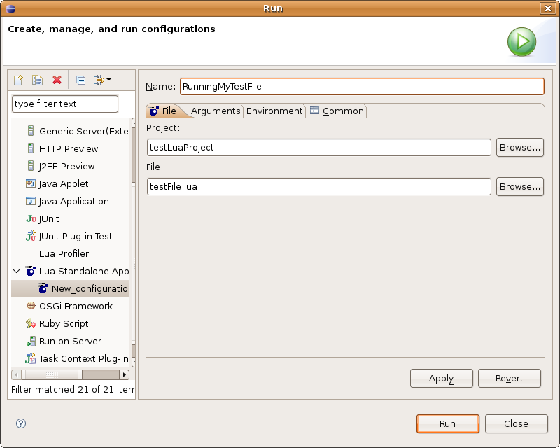
Na aba File, selecione o projeto e o nome do arquivo Lua a ser executado.
Na aba Arguments, configure o diretório de execução, argumentos do interpretador e argumentos do script Lua

Finalmente na aba Environment, selecione ou adicione um interpretador Lua para executar o arquivo Lua. No campo Variables, adicione as variáveis de ambiente que desejar para a execução do script.

Pressione o botão "Run", e acompanhe a saída padrão
na "Console View".
Integração com o LuaProfiler
LuaEclipse introduziu na version 1.2 uma nova perspectiva para o Lua Profiler. Ela torna possível ao usuário executar um script lua usando o módulo LuaProfiler, exibindo os resultados numa View especial

Uma vez que é possível utilizar diversos binários de runtime, é necessário indicar o mecanismo de profile que se deseja usar.
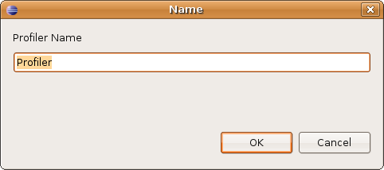
Esse mecanismo de profiler será identificado por um nome, e pode ser reutilizado em diversos projetos.

Uma vez que o profiler estiver selecionado, qualquer script que possa ser executado poderá ser analisado com o LuaProfiler. Não há necessidade de incluir comandos 'require' ou iniciar o profiler de nenhuma forma dentro do script - o plug-in funcionará automaticamente em qualquer script Lua válido
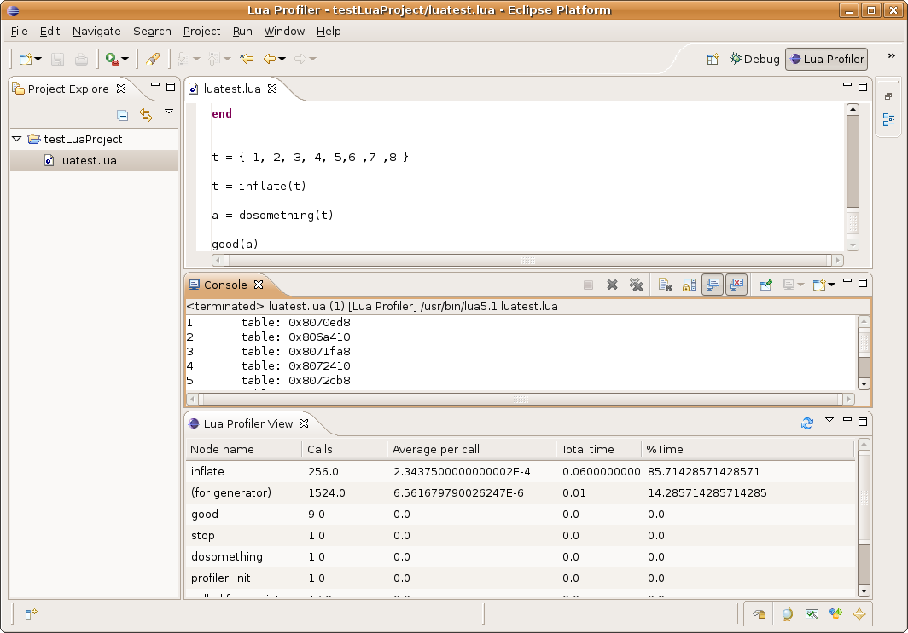
Os resultados da análise de execução com o LuaProfiler podem ser vistos em uma View especial, separados em colunas. A primeira coluna mostrará todas as funções usadas na execução; a segunda coluna mostrará a quantidade de vezes que cada função foi chamada; a terceira mostra o tempo médio decorrido dentro da função, dividido pela quantidade de chamadas; as últimas duas colunas são o tempo total gasto dentro de cada função e o percentual da execução total que esses tempos representam.
Integração com o LuaDoc
A versão 1.2 do LuaEclipse também introduziu integração básica com o módulo LuaDoc.

É possível ao usuário escrever documentação no estilo LuaDoc diretamente em seu código, e visualizar os resultados formatados em HTML no hover do mouse.

O plugin usa o próprio LuaDoc para processar a documentação; o módulo está agora embutido na distribuição padrão do LuaEclipse, de modo que os usuários não precisam instalá-lo antes de usar essas funcionalidades.
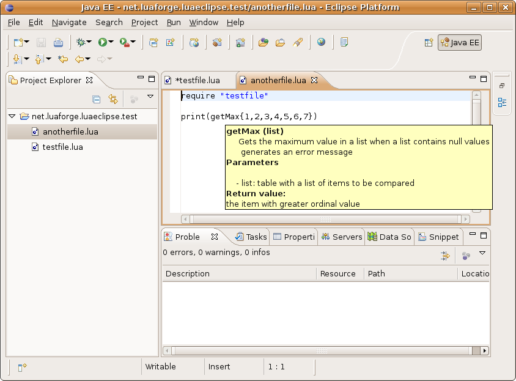
A documetação é processada cada vez que um arquivo lua é salvo, e a documentação presente no projeto é persistida e fica disponível mesmo depois que o projeto é fechado e reaberto.

Adicionalmente, o manual de referência do Lua 5.1 foi incluída como uma documentação extra - de modo que o usuário agora pode sobrevoar as funções da biblioteca padrão com o mouse para visualizar sua documentação oficial.
Depurador integrado com o RemDebug
A versão 1.3 introduzir um depurador integrado usando RemDebug -- um mecanismo de depuração remota para Lua.

Disparar um script lua para depuração é similar ao modo de execução normal de um script lua.
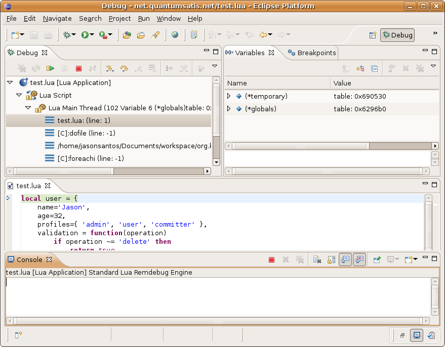
A pespectiva de Debug provê várias janelas de visualização para ajudar a depurar seus scripts. Uma das principais funcionalidades é a stack frame -- uma lista com cada um dos níveis de chamada entre o disparador e a linha atual.

Clicando em qualquer nível da pilha de chamadas o depurador carregará o arquivo onde essa chamada foi feita (iluminando a linha corrente) e mostrará todas as variáveis daquele contexto na janela de visualização de variáveis.

É possíbel executar os scripts passo-a-passo usando os botões step over ou step into , presentes na barra de ferramentas sobre a stack frame (ou alternativamente no menu 'Run'). Quando você faz um step into em uma função a execução entrará na função, módulo ou arquivo em questão, abrindo-os em um editor se for possível.
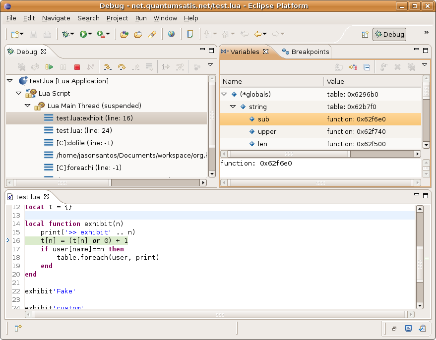
É possível inspecionar o valor de variáveis locais e globais. Quando uma variável é uma tabela lua você ainda pode expandi-la para inspecionar seus valores.
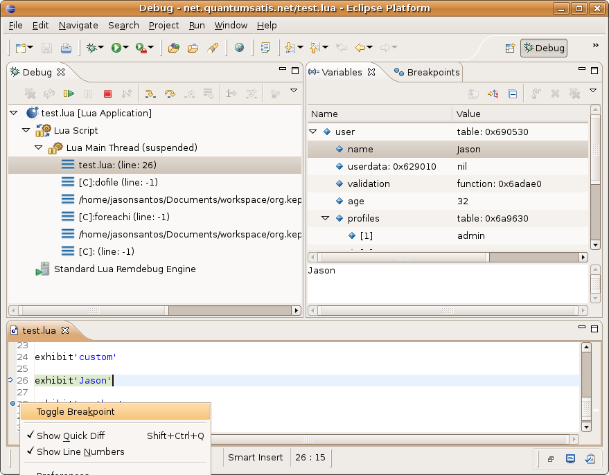
O Editor de scripts lua foi atualizada para adicionar as capacidades de ativar e persistir breakpoints simples. Quando a execução atinge um breakpoint ela pára automaticamente, permitindo ao usuário continuar passo-a-passo a partir daquele ponto.
O Remdebug se comunica com o LuaEclipse através de um par de 'sockets' -- conexões de rede. o LuaEclipse escolhe as portas para essa comunicação e as informa ao mecanismo de disparo.